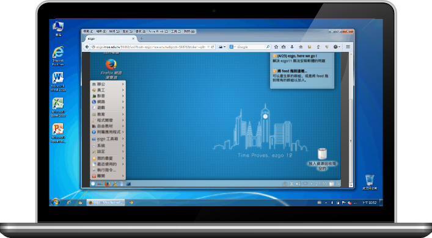
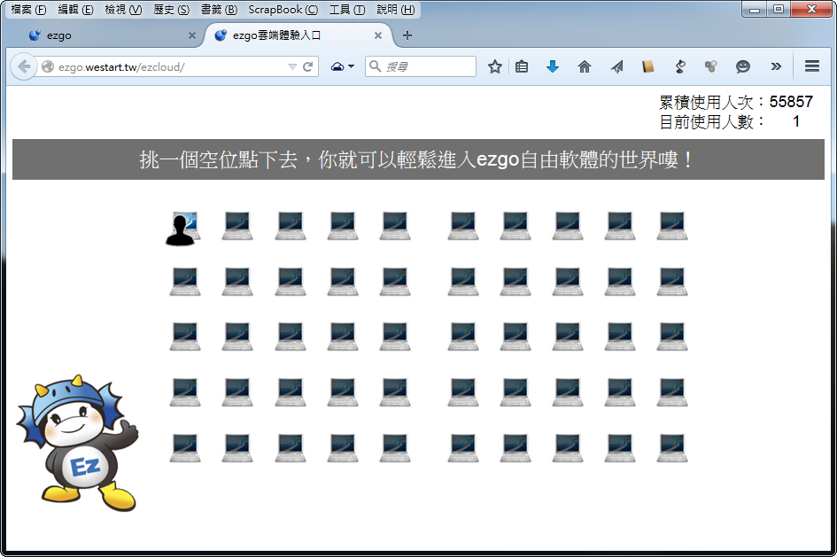
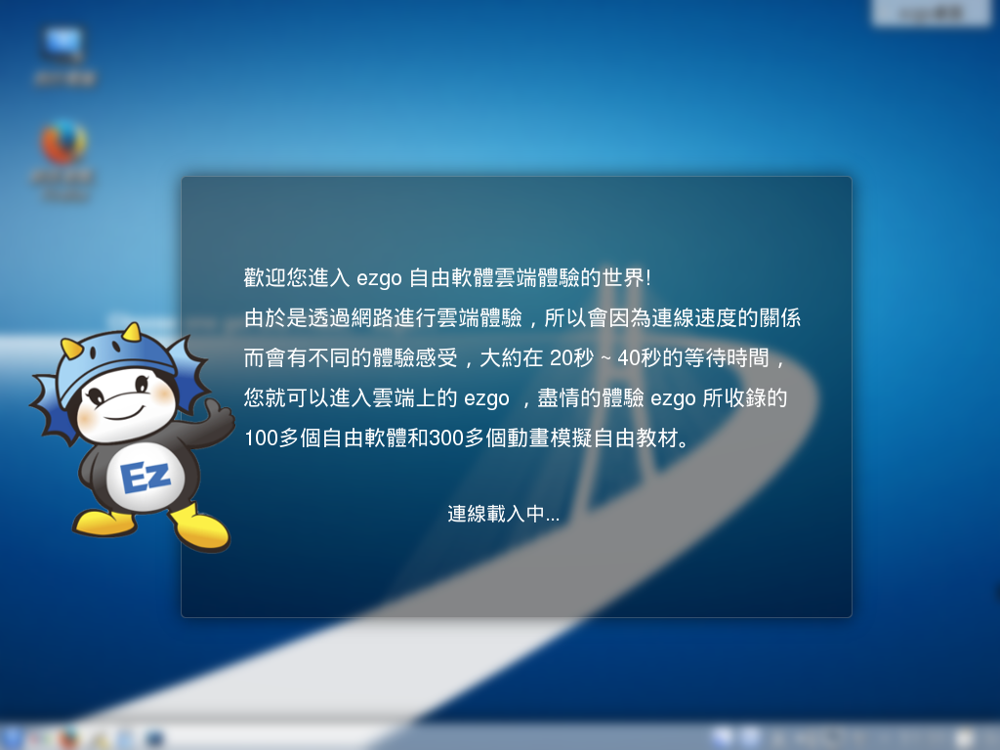

1-1 雲端體驗
雲端之上，看見視窗裡的自由軟體世界
有了自由軟體雲端平臺，無論您在任何系統平台，透過瀏覽器，即可輕鬆進入自由軟體作業系統，
體驗更豐富的軟體世界。

●雲端體驗
● 優點：
○ 跨平台，不受系統限制。
○ 跨載具，可在手機及平板電腦上體驗。
○ 無需安裝任何軟體、不影響原有電腦系統及資料。
● 缺點：
○ 網路頻寬會影響體驗品質
○ 無法儲存相關設定或檔案
○ 無法播放多媒體聲音
○ 需要登入才能在體驗平台中上網
●操作步驟：
1.在 ezgo 官方網站中，點選『 雲端體驗』的圖示。
2.開啟座位圖，點選一個沒有人像的空位，接下來即可開啟一台雲端體驗平臺。

3.看到如下的畫面，表示您正在等待遠端開機啟動的過程，依電腦等級及連線速度的差異，啟動過程
大約會歷經 2-5 分鐘。

4.看到如下的畫面，恭喜您，這表示您已順利進入到ezgo自由軟體雲端體驗平台，點進左下角的
『開始功能表』按鈕就可以開始體驗自由軟體及自由教材的各項應用。